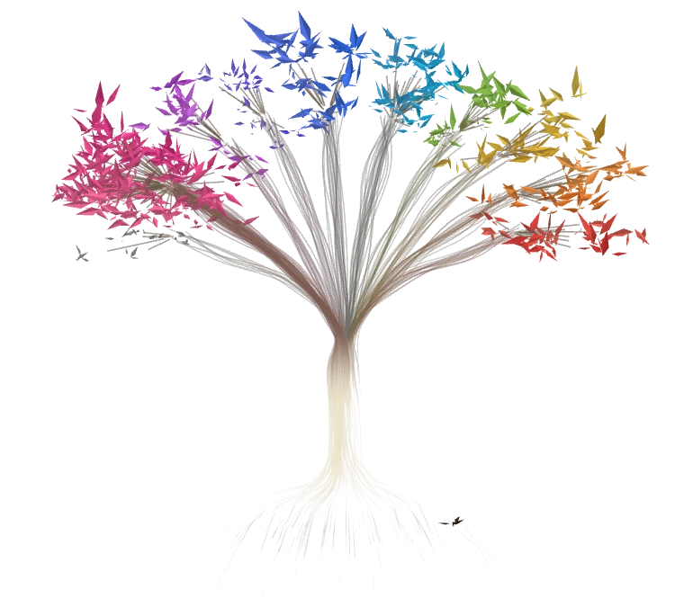
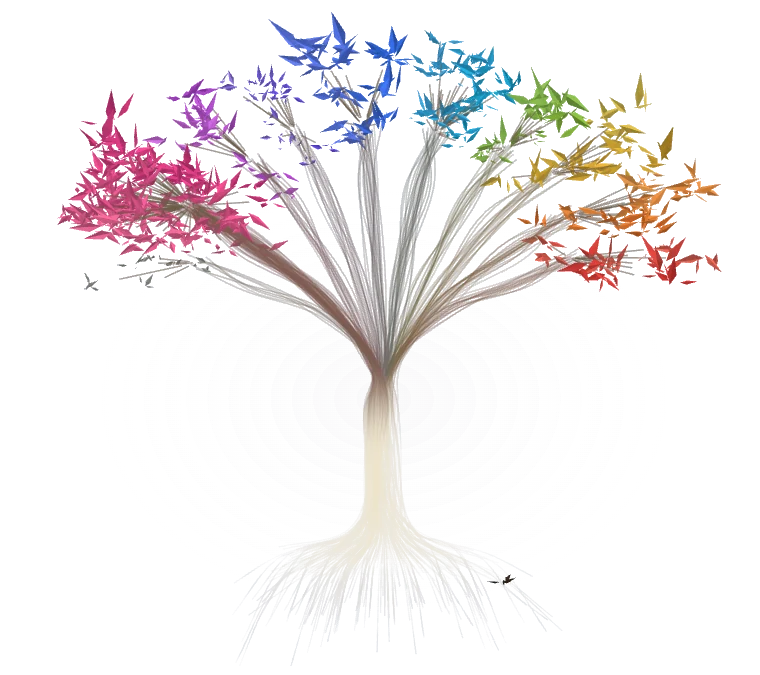

Prepared by agents.
Signed by you.
Morel is the workplace for small offices and their AI crew. Agents do the legwork, a person signs every answer, and each one you approve becomes knowledge your whole office can reuse.
- Searched the Knowledge Tree for “burst pipe”
- Opened customer file · M. Keller
- Opened Home terms 2023 · skipped 2021 (superseded)
- Fairy ring: 3 checks passed
- Draft ready · waiting for A. Weber
yes. Your 2023 home terms cover water damage from a burst pipe inside the building 1. Please send us photos of the damage and the plumber's invoice, and we'll file the claim today.
Kind regards, A. Weber


Source: Home terms 2023, § 4.2
Product preview with fictional example data. The tree view is a real screen.
Designed for insurance brokers, tax offices and small agencies in NRW, where answers must be right and someone must sign them.
The life of one request.
Six steps. One signature.
Every question gets an owner.
Jarvis, your lead agent, reads what comes in and hands it to the right specialist. You see who has it, and what state it's in.
- One ownerEvery request has a named agent on it.
- Six honest statesReady, Thinking, Working, Needs you, Done, Failed.
- No guessingThe state lives on the agent's face.
 ReadyThinkingWorking
ReadyThinkingWorking Needs you
Needs you Failed
FailedThe legwork, done before you look.
Research finds the file, opens the version of the terms that applies, and drafts the answer with its sources. Every step is written down.
- Right versionThe terms that apply, not the newest or the first found.
- Sources attachedEvery claim points to a clause.
- Your access rulesAgents see only the folders you allow.
- Searched the Knowledge Tree for “burst pipe” · no leaf yet
- Opened customer file · M. Keller · policy HR-2023-0417
- Opened Home terms 2023 · § 4.2 ·
2021superseded - Drafted reply and advice record · 1 source cited
A second opinion, built in.
Before a draft reaches you, a small council of agents tries to break it. If they disagree, you see why.
Agents can't approve.
Only people can.
Only what needs you comes forward, with its sources beside it. One click signs it with your name and the time. Anything else goes back with a note.
On Home, in the chat or as a toast. The request carries its own buttons wherever it shows up.
No agent can press it. Approvals fail closed: if a person hasn't signed, nothing leaves.
- Asked
- M. Keller · 08:12
- Prepared
- Research
- Checked
- Fairy ring · 3 agents
- Source
- Home terms 2023, § 4.2
- Signed
- A. Weber · 08:31
Every step on record, for the day someone asks.
The second time, your office already knows.
Each approved answer becomes a leaf on your Knowledge Tree, on the branch for its topic. When a similar question comes in, your crew starts from it and says so.
A team with names,
not a chatbot.
Each agent has a face, a job, its own permissions and its own engine. Swap the engine any time. The agent, its rules and your tree stay put.
| Agent | Job | May read | May write | Engine |
|---|---|---|---|---|
| Lead. Routes every request. | Requests, crew status | Assignments | Claude | |
| Finds the file, version and clause. | Contracts, terms, tree | Drafts | Codex | |
| Outreach | Letters in your office's voice. | Approved answers, templates | Drafts | DeepSeek |
| Deadlines and the paper trail. | Records, calendar | Reminders | Your choice |
Example setup. Nobody on the crew can send, sign or delete.
Built for work you're liable for.
- Human sign-off by designAgents propose. People decide. Approvals fail closed.
- Every step on recordWho prepared it, which sources, who signed, when.
- Your data stays homeDesigned to run in the EU or on your own machines.
- Permissions per agentEach agent sees only what you allow.
Your knowledge belongs to your office, not to an AI vendor.
Start with one question.
Tell us the question your office answers most. We're shaping Morel with a small group of pilot offices around exactly that.
Thanks. We'll be in touch personally.